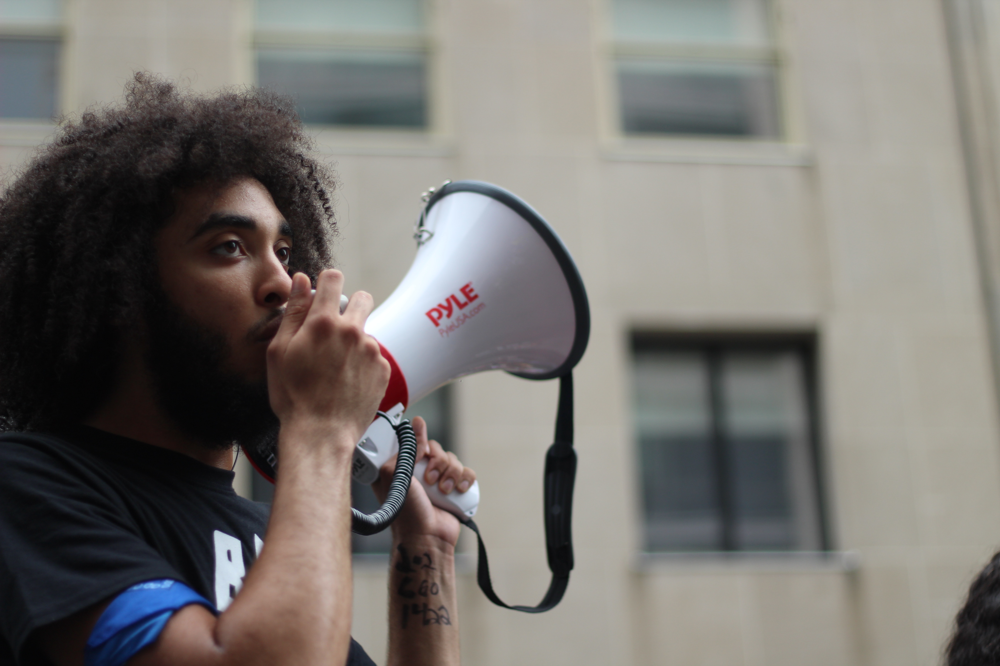

YWCA Madison: Letter to City Council Opposing Body Cameras
LETTER BY YWCA MADISON CEO VANESSA McDOWELL. Dear Madison Common Council Alders and Mayor Paul Soglin, YWCA Madison strongly supports Common Council Proposed Operating Amendment #4 and Common Council Proposed Capitol Amendment #1 to remove funding to pilot body cameras for Madison Police. The city is not ready yet for body cameras. In 2015, YWCA Madison assisted the city in gathering community input on the use of body cameras. Our work found that the primary safety issue for communities of color was trust and that as long as the community didn’t trust the police, they wouldn’t trust police use of body cameras. The community neither supported nor opposed body cameras per se, but instead opposed body cameras until stronger trust was established. Today, as the city considers the implementation of body cameras, we see no evidence of improved trust. The proposed pilot comes without any clear policy guidelines for when the cameras will be used, how the recordings will be shared, and how a review of body camera usage will happen. These policies need to be developed first, with community input, not just by the police department alone. Until this is done, the city should not consider implementing body cameras. Additionally, body cameras do not increase public safety. Body cameras have had no impact on either officer use of force or on complaints against police officers. [1] If we want to address safety, we need to build trust. This is the third year the council is considering implementing body cameras, and this is the third year we are asking you to not to. That is because the city has not yet done the hard work. The city needs to work directly with the community to develop protocols that build trust. Only when that happens can we consider adding body cameras. Thank you to Alders Hall, Bidar-Sielaff, Furman, Kemble, Martin, Phair, Rummel, and Zellers for sponsoring these amendments. YWCA Madison asks all members of the city council to support Common Council Proposed Operating Amendment #4 and Common Council Proposed Capitol Amendment #1 and remove funding to pilot body cameras. [1] See “Why Don’t Police Body Cameras Work Like We Expected?”, Forbes Magazine, October 23, 2017; “Police officers with body cameras are as likely to use force as those who don’t”, Washington Post, October 20, 2017; “So if Police Body Cams Don’t Work, What’s the Solution?”, Newsweek Magazine, October 30, 2017; “ Body Cameras Have Little Effect on Police Behavior”, New York Times, October 20, 2017; “Police Body Cameras Aren’t Helping You”, Huffington Post, October 20, 2016

Commute to Career Grant
Governor Walker Announces $5.1 Million in Commute to Careers Grants “These grants will give thousands of Wisconsin workers improved access to meaningful jobs or training opportunities that they need to enter the workforce.” MADISON – Governor Scott Walker today announced that 29 grants, totaling more than $5.1 million, have been awarded under the Commute to Careers program, a multi-agency initiative to eliminate transportation barriers for workers seeking to advance their careers or enter the workforce. The program is funded by the Wisconsin Departments of Workforce Development (DWD) and Transportation (WisDOT). “These grants will give thousands of Wisconsin workers improved access to meaningful jobs or training opportunities that they need to enter the workforce,” Governor Walker said. “Given Wisconsin’s historically low unemployment rate, it is important that we eliminate these barriers to ensure that no workers are left on the sidelines.” The goal of the Commute to Careers program is to expand the pool of labor talent by connecting workers with affordable transportation to and from work or training programs. DWD and WisDOT will be requesting an additional $8 million in funding in the 2019-21 biennial budget to continue the Commute to Careers program. Over time, it is expected that private funding will replace public dollars, establishing a long-term network of transportation options that will enable both rural and urban workers to reach training and employer sites. “The Commute to Careers program will build strong partnerships between the public and private sectors to address the needs of hard-working people who face barriers getting to and from work,” DWD Secretary Ray Allen said. “With Wisconsin’s unemployment rate at or below 3 percent for eight consecutive months, we need everyone in the game to keep our economy strong.” DWD has awarded 23 grants totaling $4,338,350, while WisDOT made six grants totaling $832,072. “The Commute to Careers is a life-changing transportation solution,” WisDOT Secretary Dave Ross said. “This is an essential effort to ensure Wisconsin workers have the means to get to and from work, benefiting themselves and their families.”
YWCA USA: Stop Allowing Abuse
STATEMENT BY YWCA USA CEO ALEJANDRA Y. CASTILLO “Domestic violence continues to be an epidemic impacting one in four women in the United States. One of the primary reasons domestic violence continues at this pace is because abusers face little to no accountability for their actions. Often, they are protected by other people in power, like White House Chief of Staff John Kelly and his colleagues.” “While Mr. Kelly may feign shock over this news, I know firsthand the rigorous vetting process potential White House staff go through – no stone is left unturned. This case is yet another example of powerful men denigrating women’s experiences in order to protect and promote one another. This is a further indictment of the values of this White House, especially as it relates to victims of gender-based violence.” “With an estimated 1,600 women killed by men each year, we cannot afford to tolerate abuse, the men who perpetrate it or those who protect them. At YWCA we help over 530,000 women and their families in gender-based violence programming each year. Programs like ours are critically important for survivors, but so are the actions of decision makers, community members, and bystanders. Each person has a role to play in ending domestic violence, and we can start with accountability in one of the most powerful offices in our country – the White House.”

We Need Real Solutions, Not Platitudes
Statement by YWCA USA CEO, Alejandra Y. Castillo “In last night’s State of the Union address, President Trump doubled down on his standard dog-whistle of divisive rhetoric and scapegoating our most underserved communities. Last night’s litany of policies focused on building a border wall, separating immigrant families and ramping up penalties for drug offenders. He also touted alleged successes by his administration for working families and communities of color. While speaking in platitudes is easy, staying safe and healthy while trying to make ends meet is a real challenge for the women and families we help every day at YWCA. The fact remains that the President’s vision for a “New American Moment” is in direct conflict with YWCA’s vision of a world free from racism and sexism, where every woman and girl can realize her full potential. “In the same breath that he spoke about his regard for our children and forgotten communities, President Trump made clear that his primary strategy is leveraging White America’s most troubling and racialized fears to achieve political and economic goals that benefit his wealthy friends. We urge our fellow Americans not to be fooled by niceties and manipulated figures. The low African American and Hispanic unemployment rates cited as a Trump success actually began long before his 2016 election. He celebrated minor wins for the average family from a tax bill passed last month that primarily benefits wealthier people and corporations without addressing the real economic challenges struggling families face as they work to put food on the table, pay the bills, and care for sick family members. “In YWCAs across the country, 2.3 million women, girls and their families are getting the support they truly need to survive in spite of the policies, histories and injustices that work against them. We are proud to continue standing up for ourselves and our communities – and we won’t stop now.”

Shutdown Hurts Women, Families, And Communities Of Color
STATEMENT BY YWCA USA CEO ALEJANDRA Y. CASTILLO “We are deeply disappointed in Congress’ failure to do their jobs and fund programs that support women, families, and our communities. “The impacts of this shutdown are broad and diverse, from the expiration of the Children’s Health Insurance Program (CHIP) blatantly putting children’s health at risk, to leaving the fate of 800,000 Deferred Action for Childhood Arrival (DACA) program recipients up in the air, to shutting off Head Start and other grants and programs that infuse resources into communities where they need it most. At YWCA, we are especially concerned about the impact this will have on the communities we serve. “Immigrants deserve immediate action on the Dream Act and women, families, and communities deserve access to the federally funded services supported by taxpayers. The reverberations of this mistake will harm millions of Americans for months after a resolution is made – but we already know that women, children and communities of color stand to lose the most. “We call on Congress to provide permanent protections to Dreamers, reauthorize CHIP, and fund the federal government now.”
YWCA USA: Support Survivors and Speak Out
STATEMENT BY YWCA USA CEO ALEJANDRA Y. CASTILLO “Recently, new stories of sexual assault and harassment dominate the news cycle. But women, survivors and advocates confront these issues every day, whether or not they make the press. From the White House to the halls of Congress, from Hollywood to main street, men use their positions of relative authority and power to intimidate women and survivors of violence into silence. Whether through Twitter, nondisclosure clauses, slander, career sabotage or physical violence, the act of silencing women and survivors is oppressive and morally bankrupt. “The fact that voters are consistently faced with viable candidates who have committed violence against women and children underscores the severity and gravity of this problem. However, we are heartened that perseverance and civic engagement continues in spite of significant voter suppression. Black women in particular have continued to raise their voices and organize their communities against injustice. “Together, we must keep working to address our country’s pervasive and insidious culture of gender-based violence, as YWCAs are doing daily in communities across the country. We know that accountability for abusers is imperative in order to eradicate gender-based violence. Until that day comes, YWCA will continue to support survivors, call for justice, and work to empower women.”

The Muslim Travel Ban Puts Families At Risk
STATEMENT BY YWCA USA CEO ALEJANDRA Y. CASTILLO “Today the Supreme Court lifted the restraining order on the Muslim travel ban, leaving immigrants, refugees and families exposed to further racial profiling by the federal government. The Supreme Court has not yet ruled on the constitutionality of the ban, but we know the ban will further institutionalize racism through public policy. YWCA USA stands firmly against policies that target people based on race, religion or ethnicity. Everyone deserves equal protection under the law.”